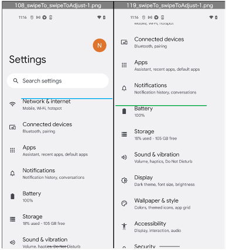

swipe, flick
You can swipe or flick screen using these functions.
functions
| swipe function | description | flick function |
|---|---|---|
| swipeTo | Swipe the element to another element | n/a |
| swipeToAdjust | Swipe the element to another element, with adjustment | n/a |
| swipeVerticalTo | Swipe the element to y coordinate vertically | n/a |
| swipeHorizontalTo | Swipe the element to x coordinate horizontally | n/a |
| swipeToTop | Swipe the element to top | flickToTop |
| swipeToRight | Swipe the element to right | flickToRight |
| swipeToBottom | Swipe the element to bottom | flickToBottom |
| swipeToLeft | Swipe the element to left | flickToLeft |
| swipeToCenter | Swipe the element to center | n/a |
| swipeCenterToTop | Swipe from center to top | flickCenterToTop |
| swipeCenterToRight | Swipe from center to right | flickCenterToRight |
| swipeCenterToBottom | Swipe from center to bottom | flickCenterToBottom |
| swipeCenterToLeft | Swipe from center to left | flickCenterToLeft |
| swipeLeftToRight | Swipe from left to right | flickLeftToRight |
| swipeRightToLeft | Swipe from right to left | flickRightToLeft |
| swipeBottomToTop | Swipe from bottom to top | flickBottomToTop, flickAndGoDown |
| swipeTopToBottom | Swipe from top to bottom | flickTopToBottom, flickAndGoUp |
| swipePointToPoint | Swipe from the start coordinate to the end coordinate | n/a |
| swipeElementToElement | Swipe from the start element to the end element | n/a |
| swipeElementToElementAdjust | Swipe from the start element to the end element with adjustment | n/a |
swipeTo, swipeToAdjust
Swipe1.kt
(kotlin/tutorial/basic/Swipe1.kt)
@Test
@Order(10)
fun swipeTo_swipeToAdjust() {
scenario {
case(1) {
condition {
it.macro("[Android Settings Top Screen]")
}.action {
it.select("[Battery]")
.swipeTo("[Network & internet]")
}.expectation {
}
}
case(2) {
condition {
it.macro("[Android Settings Top Screen]")
}.action {
it.select("[Battery]")
.swipeToAdjust("[Network & internet]")
}.expectation {
}
}
}
}
swipeTo is not precise, but fast.

swipeToAdjust is more precise, but slow.

swipeToCenter, swipeToTop, swipeToBottom
Swipe1.kt
(kotlin/tutorial/basic/Swipe1.kt)
@Test
@Order(20)
fun swipeToCenter_swipeToTop_swipeToBottom() {
scenario {
case(1) {
condition {
it.macro("[Android Settings Top Screen]")
.exist("[Notifications]")
.exist("[Battery]")
.output("scrollFrame: ${it.scrollFrame}")
}.action {
it.select("[Battery]")
.swipeToCenter()
.swipeToTop(durationSeconds = 10.0)
}.expectation {
output("[Battery].bounds: ${it.bounds}")
.dontExist("[Notifications]")
.exist("[Battery]")
}
}
case(2) {
condition {
it.exist("[Security]")
.exist("[Privacy]")
}.action {
it.select("[Security]")
.swipeToBottom(durationSeconds = 10.0)
}.expectation {
output("[Security].bounds: ${it.bounds}")
.exist("[Security]")
.dontExist("[Privacy]")
}
}
}
}
swipePointToPoint
Swipe1.kt
(kotlin/tutorial/basic/Swipe1.kt)
@Test
@Order(30)
fun swipePointToPoint() {
scenario {
case(1) {
condition {
it.macro("[Android Settings Top Screen]")
}.action {
it.swipePointToPoint(
startX = viewport.centerX,
startY = viewport.centerY,
endX = viewport.centerX,
endY = viewport.top
)
}.expectation {
}
}
case(2) {
action {
it.swipePointToPoint(
startX = viewport.centerX,
startY = viewport.centerY,
endX = viewport.centerX,
endY = viewport.bottom,
durationSeconds = 0.2
)
}.expectation {
}
}
}
}
For more examples, see Swipe1.kt